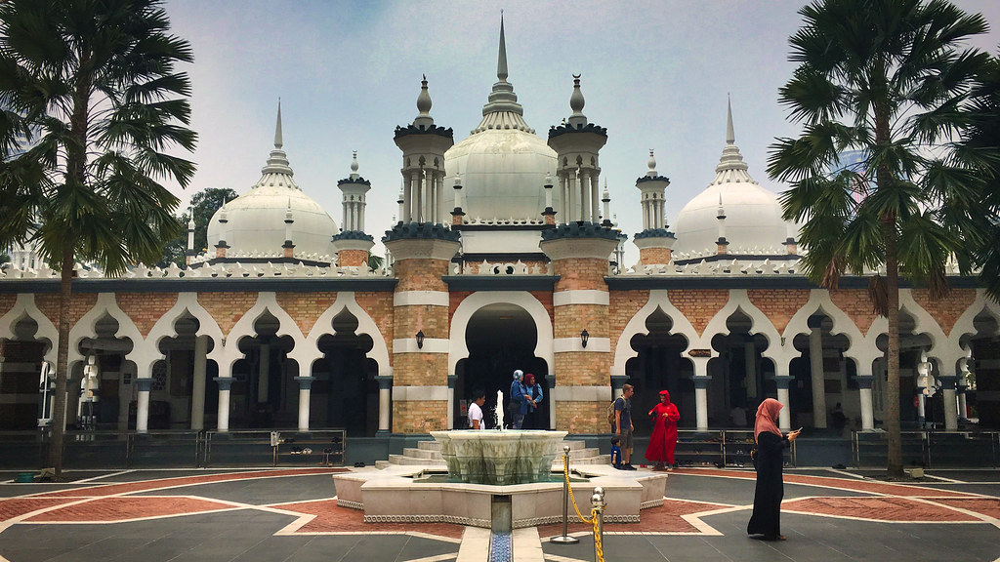

|  |
Jamek Mosque, officially Sultan Abdul Samad Jamek Mosque is one of the oldest mosques in Kuala Lumpur, Malaysia. It is located at the confluence of the Klang and Gombak River and may be accessed via Jalan Tun Perak. The mosque was designed by Arthur Benison Hubback, and built in 1909.